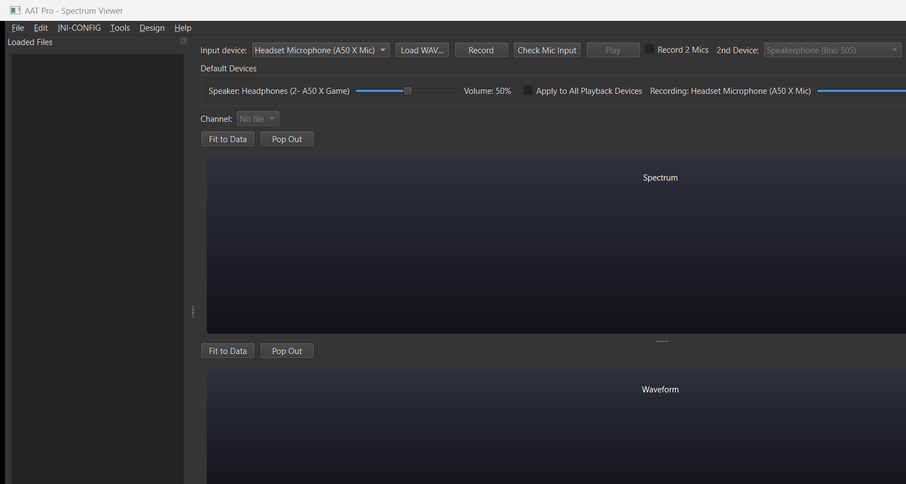
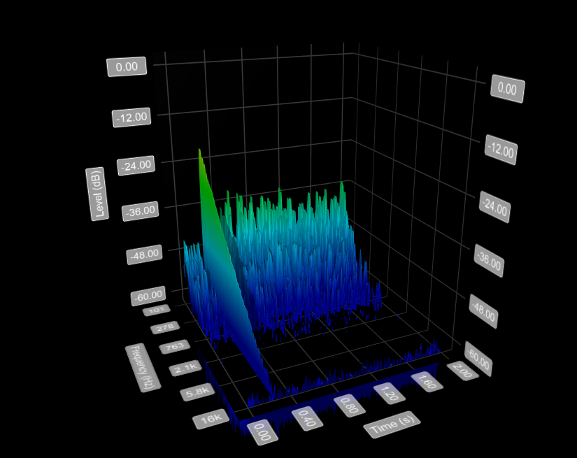
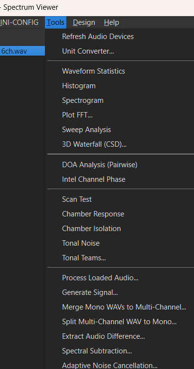
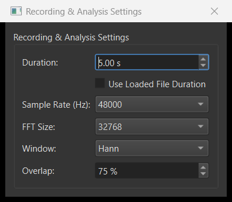

AAT Pro 1.5.0
A Windows desktop application for recording, viewing and analysing audio — for acoustic engineering, product validation and production-line testing. Load or record a WAV file, pick a channel, and every chart, meter and analysis tool works on that signal.
The new, faster native version of the Audio Analysis Tool: rebuilt from the ground up in C++, it starts quickly, handles long multi-channel recordings (16 channels and more) and runs many analyses in parallel on all CPU cores.
Installer
AAT_Pro_Setup_1.5.0.exe · 20.0 MBYou can install software on the PC. Adds Start-menu shortcuts and an uninstaller.
Download installerPortable
AAT_Pro_Portable_1.5.0.zip · 26.8 MBLocked-down PC (no installation, no registry access, no admin rights), or run it from a USB drive. Unzip and run.
Download portableBoth contain exactly the same program — you only need one. All files and release notes are on the GitHub release page. Looking for the original AAT (Windows 32-bit / macOS)? See Classic AAT.

Install
Requires Windows 10 or 11 (64-bit). No separate runtime to install — the Visual C++ runtime and all Qt libraries are included. A sound card, USB audio interface or microphone is only needed for recording.
Option A — Installer
- Double-click AAT_Pro_Setup_1.5.0.exe.
- If Windows shows "Windows protected your PC" (SmartScreen), click More info → Run anyway — the installer is not code-signed.
- Follow the wizard. It installs for the current user only (under %LOCALAPPDATA%\Programs\AAT Pro), so no administrator password is asked for.
- Start AAT Pro from the Start menu or the desktop.
Uninstall: Settings → Apps → Installed apps → AAT Pro → Uninstall, or Uninstall AAT Pro in the Start menu.
Option B — Portable (no installation)
- Copy AAT_Pro_Portable_1.5.0.zip to a folder you can write to — Desktop, Documents or a USB drive. Not C:\Program Files: recordings are saved next to the program.
- Right-click the zip → Extract All…
- Open the extracted folder and double-click AAT_Pro.exe.
Nothing to clean up: the portable version writes nothing to the registry. To remove it, delete the folder.
Where AAT Pro keeps its files
| What | Where |
|---|---|
| Settings, tool parameters, trial / license state | %APPDATA%\AAT\settings.ini |
| Recordings made with Record | the recordings folder next to AAT_Pro.exe |
| User guide | Help → How to Use inside the program, or online |
The installer and the portable version share the same settings.ini for the same Windows user on the same PC.
Getting started in 2 minutes
- Load audio — click Load WAV… or drag a .wav file onto the window. Or choose your microphone under Input device and click Record.
- Pick a channel — use the Channel box (or All Channels). Multi-channel files appear in Loaded Files, one row per channel; tick several to analyse them together.
- Look — the spectrum (top) and waveform (bottom) update immediately. Play plays the selected channel.
- Analyse — open any tool from the Tools menu, e.g. Plot FFT…, Spectrogram, Waveform Statistics or Tonal Teams…. Each tool remembers its settings.
- Save — File → Save WAV…, File → Save Plot to Image…, Edit → Save Data to CSV, or File → Export Report… to put several tools' results into one PDF.
Every menu item and tool is described in the AAT Pro User Guide.
Main features
Signal in and out
- Load mono or multi-channel WAV, or record from any input device — even two at once
- Live level meter and Realtime Spectrum with dBA readout and calibrator support
- Playback with draggable playhead and loop
- Per-file analysis time range and gain, without changing the original file
- Generate test signals; merge mono files into multi-channel or split them
Analysis
- Plot FFT, Spectrogram, 3D Waterfall (CSD), Histogram
- Waveform Statistics — peak, RMS, dB SPL, dBA, max RMS dBA, peak dBA
- Sweep Analysis — THD, Rub & Buzz and level vs. frequency
- Tonal Noise and Tonal Teams PASS/FAIL tonal-spike check
- Scan Test, Chamber Response, Chamber Isolation
- DOA Analysis and Intel Channel Phase
- Spectral Subtraction, Adaptive Noise Cancellation, Extract Audio Difference
Reporting and design helpers
- Export Report — runs the selected tools and saves all results in one PDF
- CSV export of curves and results
- Design menu: MEMS microphone, speaker and acoustic design calculators and guides
- Unit Converter — dB, distance attenuation, wavelength, mic spacing / aliasing, dBu/dBV and more
Screenshots



What's new in 1.5.0
- Free trial extended to one year (365 days).
- Portable version — runs without installation on locked-down PCs.
- The Visual C++ runtime is now included, so AAT Pro runs on PCs where it was never installed (previously "msvcp140.dll is missing").
- Tonal Teams results are interactive: hover readout, zoom, log frequency axis, Reset Zoom and an Overlay all channels view.
- All charts: hold the right mouse button and drag to move the view.
- Faster display of many-channel files (narrow spectrum peaks are kept); faster Histogram and DOA on multi-channel data.
- Apply to all loaded files for time range and gain now leaves every file unchanged if one of them cannot take the setting.
- Much more detailed user guide, with a complete table of contents.
Free trial and license
AAT Pro is free to use for 365 days from the first time it is started on a PC. The days remaining are shown in Help → About AAT Pro and in the log (Edit → View Log…).
Enter a license key
Request a key (see Support) and enter it via Help → Enter License Key while the trial is still running. The dialog tells you immediately whether the key is valid and until when.
Trial already ended?
The program will not open, so add the key by hand: close AAT Pro, open %APPDATA%\AAT\settings.ini in Notepad, and put the key in the [LICENSE] section (add it at the end if missing):
[LICENSE] license_key = YOUR-KEY-HERE
Save the file and start AAT Pro again.
Troubleshooting
| Problem | What to do |
|---|---|
| "Windows protected your PC" when starting the installer or the program | The files are not code-signed. Click More info → Run anyway. |
| Portable version does not start, or recordings fail to save | Make sure the folder was fully extracted (not run from inside the zip) and is somewhere you can write to, e.g. Desktop or Documents. |
| No input device / no sound | Connect the device first, then Tools → Refresh Audio Devices. Check Windows sound settings and microphone privacy permissions. |
| Charts are slow with many channels | Normal for very long 16+ channel files; select fewer channels or set a shorter Select Time Range…. |
| "Evaluation Period Ended" | See Trial already ended? above. |
File checksums (SHA-256)
To confirm a download is complete and unchanged, run Get-FileHash .\AAT_Pro_Setup_1.5.0.exe in PowerShell and compare:
AAT_Pro_Setup_1.5.0.exe 41E69580F779E570B4212A0677A7E418EBFC7A4F047E291904F80647ED0911F3 AAT_Pro_Portable_1.5.0.zip 92292EA19EC59D527F9C0B05E0013D88456AFEE6B6F7C2112B8C3EA6C81FDA99
Support
For a license key, questions or bug reports, contact Renee at reneeaat@gmail.com. When reporting a problem, please include the AAT Pro version (Help → About AAT Pro) and, if possible, the log (Edit → Save All Logs to File…).
Support the development
Developing software like AAT Pro takes significant time and dedication. If you find it useful, please consider a donation — it helps the author keep improving the tool, adding features and providing maintenance. If you are unable or prefer not to donate, that's completely okay: contact the author and, after communication, a license can be provided for free.